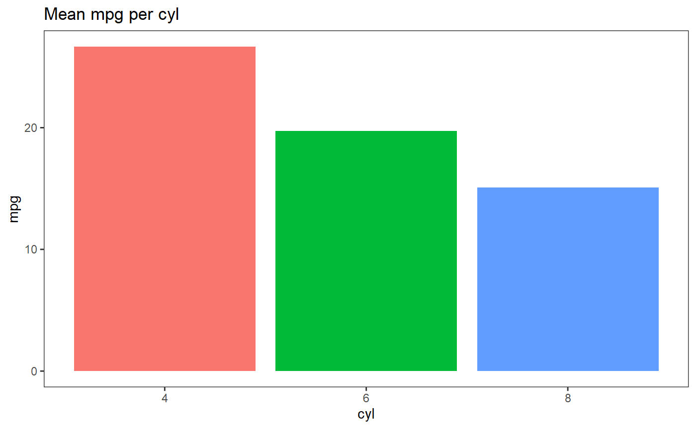
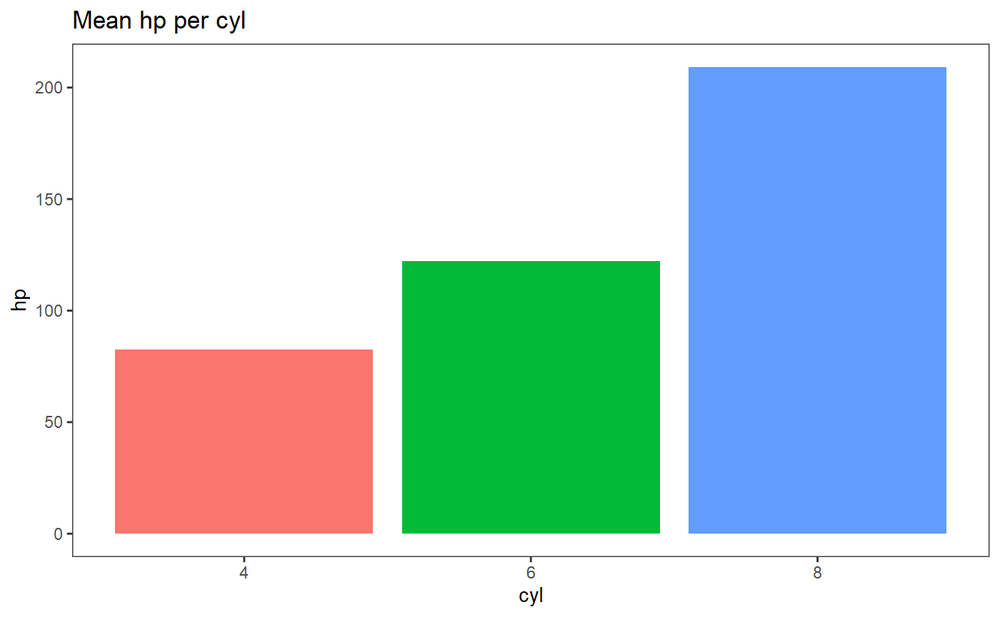
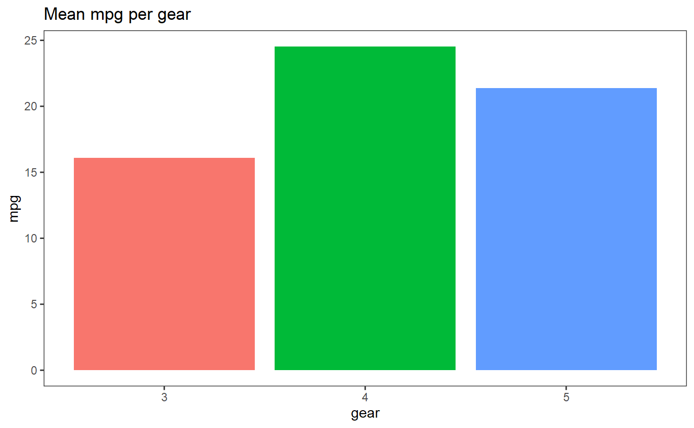
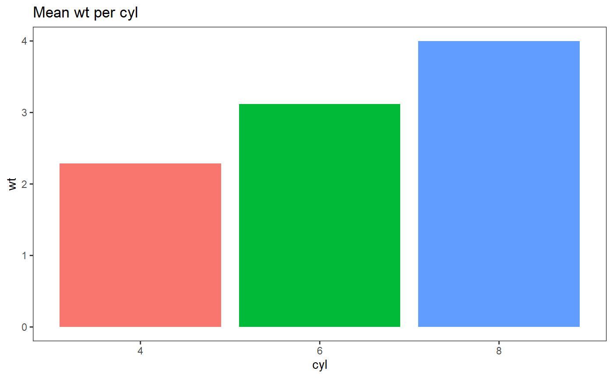
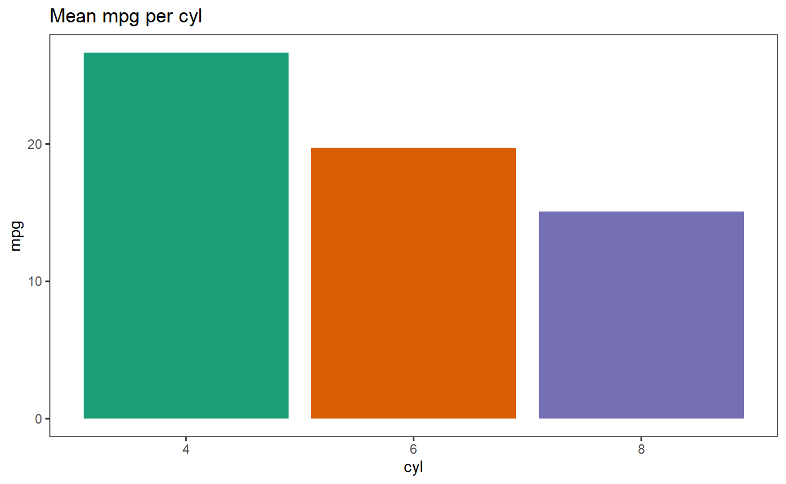

bwplot: the whys and howshow-to-use.RmdGenerating graphs for that big report? Are you tired of constantly having to change your plot backgrounds and panels from that gaudy ggplot default? Do your code chunks look like the same theme() calls over and over, and you can barely keep track of what variables you were even plotting in the first place? bw_plot may be just the thing for you!
The goal of bwplot is to generate plots with an aesthetically cleaner theme than the ggplot default. It is handy for quickly producing numerous plots that need to share the same general structure and vary only in plot variables. By presetting certain theme elements in the bwplot functions, the need to repeat code for each individual plot is reduced.
Say you were creating a bar graph comparing the mileages in the mtcars dataset to the number of cylinders of each car model. A brief lesson in creating visually pleasing graphs has taught you a number of tricks to clean up your plot. With ggplot2, you can make the following graph:
# ggplot2:
mtcars %>%
group_by(cyl) %>%
summarise(mean = mean(mpg)) %>%
ggplot() + geom_col(aes(as.factor(cyl), mean, fill = as.factor(cyl))) +
xlab("cyl") + ylab("mpg") +
theme_bw() + theme(panel.grid.major = element_blank(),
panel.grid.minor = element_blank(),
legend.position = "none") +
ggtitle("Mean mpg per cyl")
Not bad, right? Now, let’s say you wanted to graph horsepower per cylinder category, AND mileage per gear category (number of gears), OR maybe you changed your mind late one night and you want to graph weight per cylinder category instead but that wall of code is practically doing the Harlem Shake before your tired eyes. bw_plot can do all of those with just one line each:
bw_mean_col(mtcars, mpg, cyl)
bw_mean_col(mtcars, hp, cyl)
bw_mean_col(mtcars, mpg, gear)
bw_mean_col(mtcars, wt, cyl)
This is particularly effective for those formal reports that keep a consistent theme throughout all their figures. Less code? Less problem!
Need to make a small adjustment to the generic template? Just tack on ggplot2 functions like it’s a regular plot:
bw_mean_col(mtcars, mpg, cyl) + scale_fill_brewer(palette = "Dark2")
(I went into full “market my creation like my life depends on it” mode please don’t deduct marks for my super casual tone in this vignette :( )